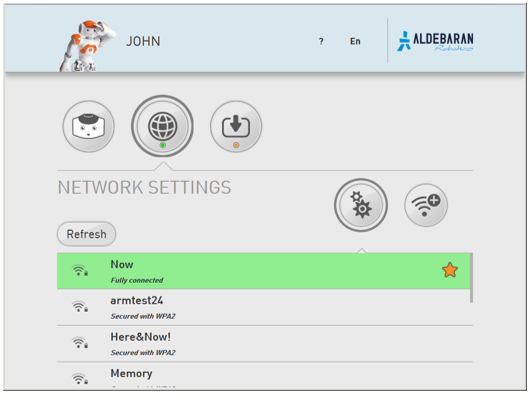

Setting NAO‘s WiFi connection¶
| Step | Action |
|---|---|
| Remove the hatch behind the head of the robot to access to the Ethernet socket. | |
Plug an Ethernet cable. 
|
|
Connect the Ethernet cable to your Internet box. For further details, see: Plugging my robot to Ethernet. |
|
Access the NAO Web page and log-in. For further details, see: Accessing the NAO Web page. |
|
| In the Network settings page, choose and configure a WiFi network. |
Result: the WiFi connection is set, you can now disconnect the Ethernet cable and close the hatch behind the head of the robot.
Network settings¶
Network settings section allows you to set the connection to the network.
Why setting a WiFi connection¶
You can connect NAO to your computer using a wired or WiFi connection:
- Wired connection is mandatory for the initial settings.
- WiFi connection is highly recommended as soon as NAO starts moving.
Warning
Make sure NAO is not connected with an Ethernet cable while executing movements which could pull the wire and damage the port.
Setting WiFi connection¶
| Step | Action |
|---|---|
Select one of the available WiFi networks. Note: choose a WiFi network having one of the Supported personal securities. |
|
Complete the required parameters, and click the Connect button. 
|
Supported personal securities¶
NAO supports WEP, WPA & WPA 2 personal securities.
Note
For WEP only the passphrase of 5 characters for WEP40 and 12 characters for WEP104 are supported, always prefer the hexadecimal representation which is the only standard.
Setting a connection behind a proxy¶
Tested configuration: Squid - HTTP CONNECT - without authentication.
To connect NAO behind a proxy:
| Step | Action |
|---|---|
| Select one of the available networks. | |
If the network is not secured, wait for connection, then click again in order to display the parameters.
|
|
Check the Advanced options box. 
|
|
In the list, select Manual. 
|
|
| Complete the required parameters, and click the Connect button. |
 Add WiFi button.
Add WiFi button.Setting wired connection¶
Warning
Make sure NAO is not connected with an Ethernet cable while executing movements which could pull the wire and damage the port.
| Step | Action |
|---|---|
| Remove the hatch behind the head of the robot to access to the Ethernet socket. | |
Plug an Ethernet cable.
|
|
Connect the Ethernet cable to your Internet box. For further details, see: Plugging my robot to Ethernet. The Wired network appears in the list. 
|
|
| Select the Wired network. |
Plugging my robot to Ethernet¶
If you have a router with a spare Ethernet port:
The router will act as a DHCP server and give NAO it’s IP address. |
 |
| Alternatives | |
If you have no spare Ethernet port or no router at all:
Linux only: see Local-Link an alternative to DHCP in order to check if your network manager is set for using link-local. |
|
| Note: in case of local connection to a computer, the Aldebaran Cloud may not be reachable. Nevertheless, local connection to NAO Web page and Choregraphe is still possible. | |